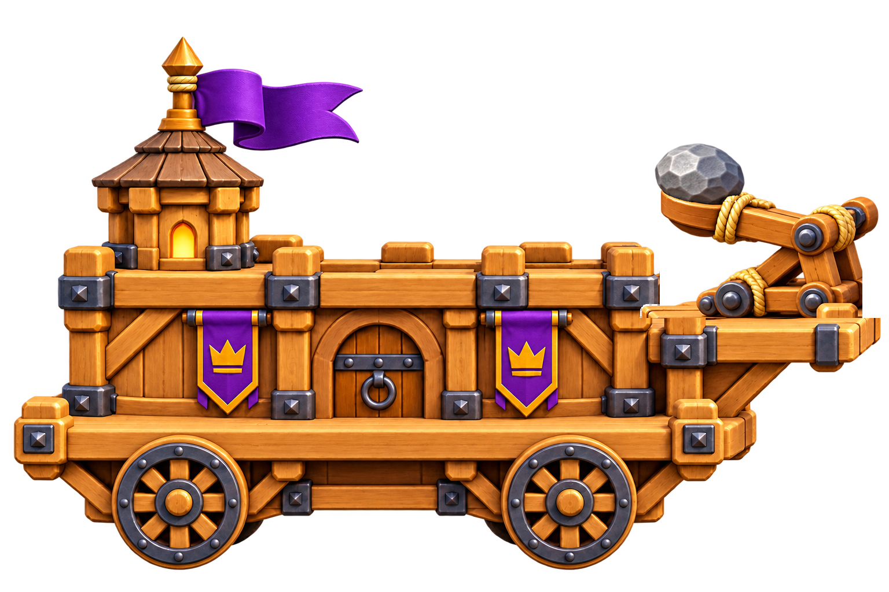
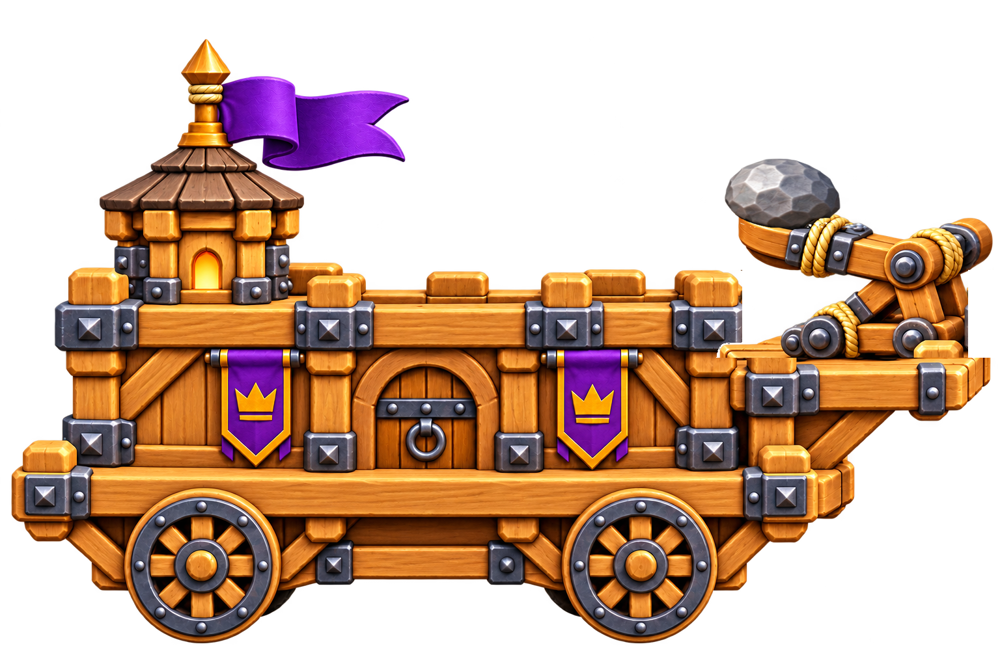
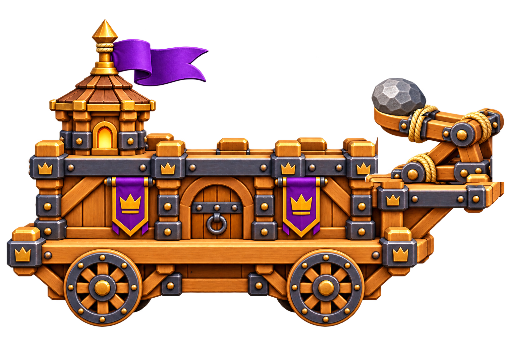
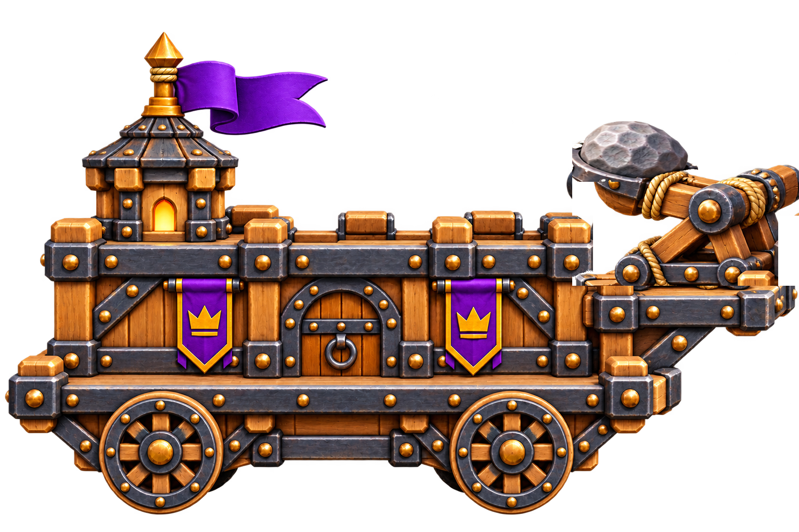
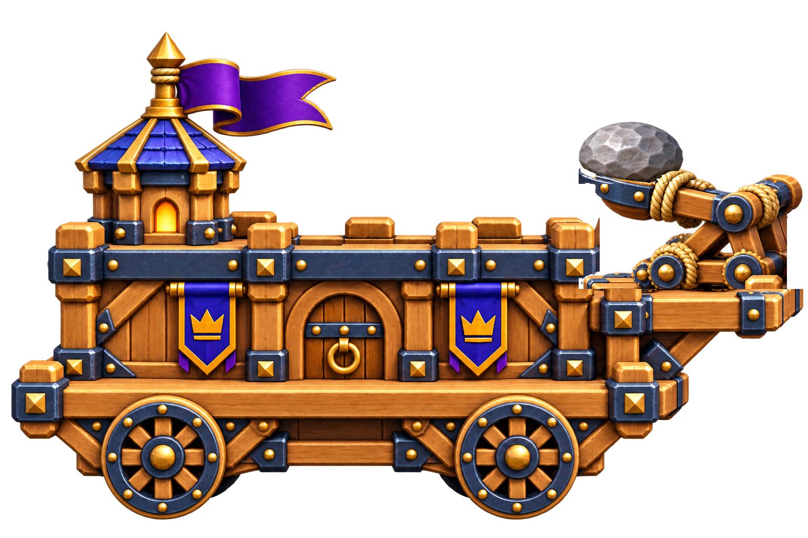
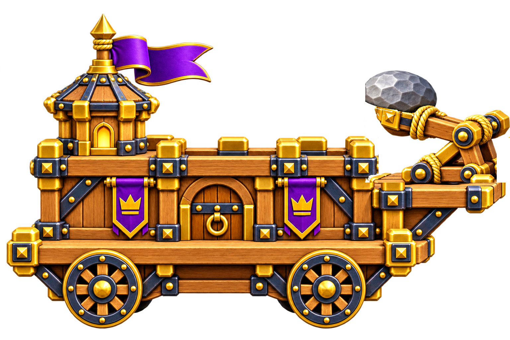

Lv.0

방 내부 · 파츠 좌표Lv.1

방 내부 · 파츠 좌표Lv.2

방 내부 · 파츠 좌표Lv.3

방 내부 · 파츠 좌표Lv.4

방 내부 · 파츠 좌표Lv.5

방 내부 · 파츠 좌표동일한 조립 좌표와 캔버스. 캐릭터 없는 통합 모습이며, 게임 내에서는 폭이 화면의 절반을 넘지 않습니다.

방 내부 · 파츠 좌표
방 내부 · 파츠 좌표
방 내부 · 파츠 좌표
방 내부 · 파츠 좌표
방 내부 · 파츠 좌표
방 내부 · 파츠 좌표